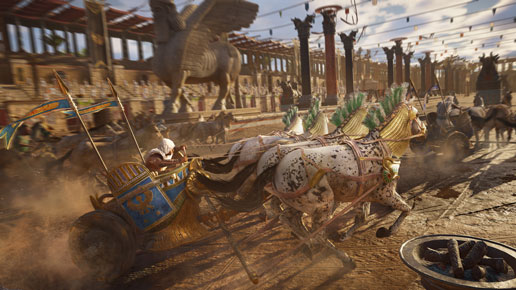
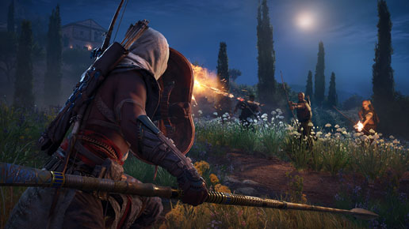
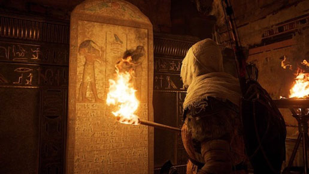

Depois de mais de um ano sem um game da série, o mundo do credo dos assassinos está de volta. Assassin's Creed Origins chega para Xbox One, PlayStation 4 e PC nesta sexta-feira (27). Depois de Syndicate, que acontece na era moderna, o lançamento nos leva para o Egito Antigo, mostrando a origem de diversos temas e acontecimentos da grande franquia da Ubisoft.
A promessa é de que, na pele de Bayek, vamos descobrir os segredos por trás das Grande Pirâmides, mitos esquecidos, os último faraós, e – entalhada em hieróglifos perdidos no tempo – a história de origem da Irmandade dos Assassinos. Além de um mundo vivo cheio de missões principais, haverá tumbas perdidas para encontrar e também vamos ter a possibilidade de explorar as Grandes Pirâmides, e descobrir os segredos das múmias, dos deuses e dos últimos faraós.
O game tem um estilo de RPG de ação, algo inédito na série, o jogador terá uma maneira completamente nova de lutar enquanto saqueia e usa uma variedade de armas com características e raridades diferentes. Há mecânicas profundas de progressão de RPG, escolha suas habilidades preferidas, e desafie suas habilidades contra chefões únicos e poderosos.
O arco, por exemplo, que passou a ser um item indispensável, ganhou atenção especial e traz habilidades novas por meio da árvore de skills. Bayek deve caçar animais com o seu arco e flecha para obter matéria-prima no melhor estilo Far Cry. Você pode usar o material coletado para confeccionar bolsas maiores e acessórios que aumentam a defesa e ampliam a taxa de dano.
Diferentemente dos títulos anteriores, agora as missões exigem um nível recomendado para serem concluídas. Você até pode se arriscar em tarefas de nível alto, mas terá de lutar mais, visto que os inimigos causam dano elevado e absorvem investidas com facilidade. Por conta disso, é necessário retornar a pontos já visitados do mapa para resolver atividades avançadas.
Mesmo mantendo a essência, Origins é o game mais ambicioso e diversificado de toda a franquia. Sim, você ainda terá de realizar saltos de fé para desbloquear novas áreas no mapa, porém as missões apostam em variedade. Há, por exemplo, atividades que surgem o tempo todo e de modo aleatório, como missões de retaliação em que é preciso vingar a morte de outro jogador real.
Além disso, Bayek é capaz de explorar e escalar pirâmides, desertos, tumbas escondidas e oásis em cinco regiões colossais. Origins brinda os jogadores com o maior mapa já visto na série - e um dos maiores em jogos do gênero. Os cenários de Nilo, Cirenaica, Siuá, Guiza e Faium chegam a assustar por terem dimensões positivamente exageradas.